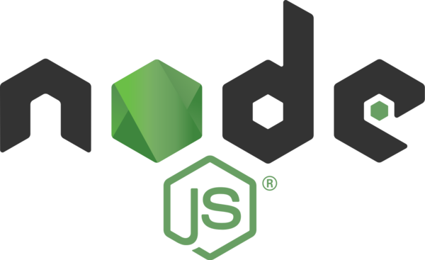
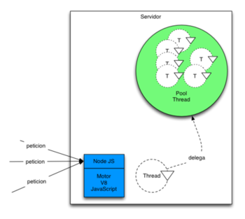

¿Que es?
Node.js es un entorno en tiempo de ejecución multiplataforma,
de código abierto, para la capa del servidor (pero no limitándose a ello) basado en el
lenguaje de programación JavaScript, asíncrono, con E/S de datos en una arquitectura orientada a eventos
y
basado
en el motor V8 de Google. Fue creado con el enfoque de ser útil en la creación de programas de red
altamente
escalables, como por ejemplo, servidores web.

¿Para que sirve?
Node.js sirve para crear sitios web dinámicos muy eficientes, escritos con el lenguaje de programación
JavaScript. Normalmente,
los desarrolladores se decantan por este entorno de ejecución cuando buscan que los procesos se ejecuten
de
forma ágil y sin ningún tipo de bloqueo cuando las conexiones se multiplican.
Arquitectura
Precisamente que sea una de las herramientas más utilizadas en el mundo del desarrollo web es gracias a
su
arquitectura.
Programación asíncrona
Uno de los puntos fuertes de Node.js es Event Loop, también conocido como Bucle de eventos,
un modelo que permite gestionar una gran cantidad de eventos de forma asíncrona, ya que se ejecutan de
forma
independiente y sin interferir unos en otros.
Motor V8 de Google
Node.js está basado en el motor V8 de Google, uno de los intérpretes de lenguaje de programación que
existen.
Este motor se encarga de compilar el código JavaScript en código de máquina, un código de nivel más bajo
que
no hace falta que sea interpretado por el navegador.
